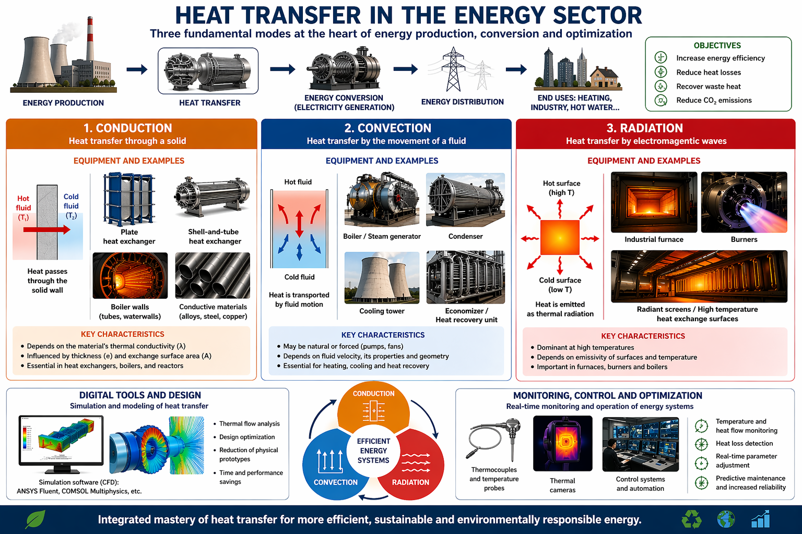

In the energy sector, heat transfer is a fundamental pillar for energy production and optimization. It is based on three main modes — conduction, convection, and radiation — and each category involves specific equipment adapted to these mechanisms.
Definition: heat transfer through a solid material.
In this field, key equipment includes plate or shell-and-tube heat exchangers, where heat passes through conductive metal walls between two fluids. Conductive materials (such as metal alloys used in boilers or reactors) are optimized to maximize this transfer. Performance strongly depends on thermal conductivity and wall thickness.
Definition: heat transfer through the movement of a fluid (liquid or gas).
Relevant systems include boilers, steam generators, condensers, and cooling towers. These devices rely on fluid circulation, either through natural convection or forced convection (pumps, fans). Heat recovery systems, such as economizers, also use this principle to recover energy from hot gases.
Definition: energy transfer through electromagnetic waves.
Associated equipment includes industrial furnaces, burners, and specially designed exchange surfaces optimized for radiation absorption or emission. This mode becomes dominant at high temperatures, particularly in thermal power plants and intensive industrial processes.
Tools such as ANSYS Fluent or COMSOL Multiphysics allow modeling and simulation of the three heat transfer modes to optimize system design and improve energy performance.
Sensors such as thermocouples and thermal cameras provide real-time system monitoring. Combined with automated control systems, they help optimize overall energy efficiency, reduce losses, and minimize environmental impact.